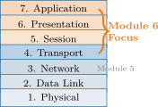
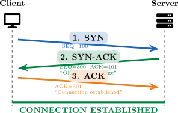
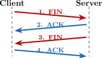
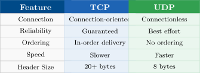
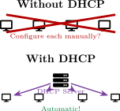
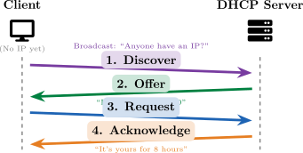
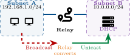
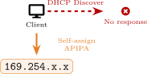
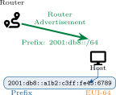
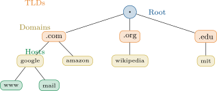

Figure: Diagram supporting the preceding content.
What We Learned (Module 5)
The Missing Piece
We can route packets, but how do devices get their addresses? How do they find services by name?

Figure: Diagram supporting the preceding content.
Module 6 Focus
Services that make networks usable: TCP/UDP, DHCP, DNS
Topics Covered
Transport Protocols TCP, UDP, ports, connections
DHCP Automatic IP configuration
APIPA & SLAAC Fallback and IPv6 auto-config
DHCP Troubleshooting Relay agents, common issues
DNS Fundamentals Name resolution, records
DNS Troubleshooting nslookup, dig, common problems
Learning Outcomes
By the end of this module, you will be able to:
Batman Universe
Case studies featuring Batman, Oracle, Batgirl, Alfred, Catwoman, and The Riddler!
After completing this module, you will be able to:
This section reviews transport-layer behavior, port roles, and protocol tradeoffs between reliable and low-latency communication.
Example
Trade-off
Reliability costs speed and overhead. TCP headers are 20+ bytes.
TCP Header (20+ bytes)
| Source Port | Dest Port |
| Sequence Number
| |
| Acknowledgment Number
| |
| Offset | Flags | Window Size |
| Checksum | Urgent Pointer |
| Options (variable)
| |
: SYN, ACK, FIN, RST, PSH, URG
Common TCP Applications
HTTP/S, FTP, SSH, SMTP, Telnet

Figure: Diagram supporting the preceding content.
Purpose
Synchronize sequence numbers and confirm both sides are ready to communicate.
Memory Tip
Think: “Send → Send back with Ack → Acknowledge”
Graceful Close (4-way)
FIN: “I’m done sending”
ACK: “Got it”
FIN: “I’m done too”
ACK: “Goodbye”
Abrupt Close (RST)
RST flag immediately terminates. Used when something goes wrong.
TIME_WAIT
Socket waits 2 min before reuse to avoid confusion with late packets.

Figure: Diagram supporting the preceding content.
Key Point
Either side can initiate close. Process is bidirectional.
Why Use UDP?
When speed matters more than perfection: streaming, gaming, VoIP, DNS queries.
Common UDP Applications
DNS, DHCP, TFTP, SNMP, VoIP, Streaming, Gaming
UDP Header (8 bytes only!)
| Source Port | Dest Port |
| 16 bits | 16 bits |
| Length | Checksum |
| 16 bits | 16 bits |
| Data (Payload)
| |
Only 8 bytes vs TCP’s 20+ bytes!
No Handshake Needed
Data sent immediately—no connection setup overhead. Trade-off: no delivery guarantee.

Figure: Diagram supporting the preceding content.
Use TCP When...
Use UDP When...
Case Study: The Mission Communications Problem
Batman is pursuing criminals through Gotham while coordinating with Oracle at the
Clocktower. He needs to accomplish two things simultaneously:
Transfer surveillance footage from the Batmobile cameras to Oracle’s servers (large video files, must not lose any frames).
Maintain real-time voice communication with Oracle during the high-speed chase (some audio glitches are acceptable).
The Batcomputer must choose the right transport protocol for each task.
Review Questions
Which protocol should be used for the video file transfer? Why?
Which protocol should be used for the voice communication? Why?
What would happen if the protocols were swapped?
Case Study Solution: Batman & Oracle
Solution: The Mission Communications Problem
Video files → TCP: Missing frames corrupt evidence. TCP guarantees delivery.
Voice comms → UDP: Real-time essential. Brief glitches beat lag. UDP wins.
If swapped: Corrupted files (UDP) or unacceptable voice delay (TCP).
Figure: Diagram supporting the preceding content.
Key Lesson
“The mission requires choosing the right tool.” Match protocol to need: reliability vs speed.
| Port | Protocol | Service | Description |
| 20-21 | TCP | FTP | File Transfer Protocol |
| 22 | TCP | SSH | Secure Shell |
| 23 | TCP | Telnet | Remote terminal (insecure) |
| 25 | TCP | SMTP | Email sending |
| 53 | TCP/UDP | DNS | Domain Name System |
| 67-68 | UDP | DHCP | Dynamic Host Config |
| 80 | TCP | HTTP | Web (unencrypted) |
| 110 | TCP | POP3 | Email retrieval |
| 143 | TCP | IMAP | Email retrieval |
| 443 | TCP | HTTPS | Web (encrypted) |
| 3389 | TCP | RDP | Remote Desktop |
Color Key
TCP UDP Both
Exam Tip
Memorize these ports! They appear frequently on the Network+ exam.
What is netstat?
netstat displays active connections, listening ports, and network statistics.
Common Options
| -a | Show all connections |
| -n | Numeric (no DNS) |
| -t/-u | TCP/UDP only |
| -l | Listening ports only |
| -p | Show process ID |
Security Use
Identify suspicious connections or unexpected services.
Sample Output
| Proto | Local | Foreign | State |
| tcp | 0.0.0.0:22 | *:* | LISTEN |
| tcp | 0.0.0.0:80 | *:* | LISTEN |
| tcp | 10.0.0.5:443 | 52.1.2.3:54321 | ESTAB |
| udp | 0.0.0.0:53 | *:* |
Reading Output
DHCP automates IPv4 addressing and options distribution; this section covers leasing flow, scope design, and relay operation.
The Problem
Manually configuring IP addresses on every device doesn’t scale. Imagine a network with 500 devices!
The Solution: DHCP
Dynamic Host Configuration Protocol automatically assigns:
Key Details
Uses UDP ports 67 (server) and 68 (client). Client-server model with lease-based addressing.

Figure: Diagram supporting the preceding content.

Figure: Diagram supporting the preceding content.
Memory Trick
DORA the Explorer finds IP addresses!
Lease Time
IP is “rented” for a set period. Client must renew before expiration.
Scope (Address Pool)
A scope defines the range of IP addresses the DHCP server can assign.
| Start IP | 192.168.1.100 |
| End IP | 192.168.1.200 |
| Subnet | 255.255.255.0 |
| Available | 101 addresses |
Lease Duration
Required Settings
Best Practice
Leave some addresses outside the scope for static assignments (servers, printers, routers).
Common DHCP Options
| Option | Name | Purpose |
| 1 | Subnet Mask | Network size |
| 3 | Default Gateway | Router address |
| 6 | DNS Servers | Name resolution |
| 15 | Domain Name | DNS suffix |
| 51 | Lease Time | Duration in seconds |
| 66 | TFTP Server | Boot server |
| 150 | VoIP Server | Phone config |
Vendor Options
Options 43 and 60 allow vendor-specific settings for specialized devices.
How Options Work
DHCP options are sent with the Offer and Acknowledge messages.
Client receives:
NTP Option
Option 42 provides time servers—critical for authentication!
DHCP Reservations and Exclusions
Reservations
A reservation binds a specific IP to a MAC address. The device always gets the same IP.
Use for:
Reservation Example
MAC: AA:BB:CC:11:22:33 Reserved IP: 192.168.1.50
Exclusions
An exclusion removes addresses from the DHCP pool. These IPs will never be assigned.
Use for:
Key Difference
Reservation: DHCP assigns specific IP to specific MAC. Exclusion: DHCP never touches these IPs.
The Problem
DHCP Discover is a broadcast. Broadcasts don’t cross routers! How do remote subnets get DHCP?
The Solution
DHCP Relay (IP Helper) forwards DHCP broadcasts to a remote server as unicast.
ip helper-address 10.0.0.5
Configure On
The router interface facing the clients (not the server).

Figure: Diagram supporting the preceding content.
Result
One DHCP server can serve multiple subnets through relay agents.
Case Study: The Wayne Manor Network Problem
Batgirl installed new training equipment in the Wayne Manor gym (VLAN 30). All
devices are getting 169.254.x.x addresses! The DHCP server is on VLAN 10 and
works fine there.
| VLAN | Subnet | Purpose |
| VLAN 10 | 192.168.10.0/24 | Main house (DHCP here) |
| VLAN 30 | 192.168.30.0/24 | Gym (problem devices) |
Review Questions
What does the 169.254.x.x address indicate?
Why can’t devices on VLAN 30 reach the DHCP server?
What solution would fix this problem?
Case Study Solution: Batgirl & Alfred
Solution: The Wayne Manor Network Problem
169.254.x.x = APIPA address. DHCP failed, device assigned link-local IP.
DHCP broadcasts don’t cross VLANs/subnets. The router blocks them.
Configure DHCP Relay on VLAN 30’s router interface: ip helper-address 192.168.10.5
Figure: Diagram supporting the preceding content.
Key Lesson
“Even the Bat-family needs proper network configuration, Miss Barbara.” — Alfred. DHCP relay enables centralized DHCP across multiple subnets.
APIPA: Automatic Private IP Addressing
What is APIPA?
When DHCP fails, devices assign themselves an IP from the 169.254.0.0/16 range.
Symptom Alert
If you see 169.254.x.x, DHCP is broken! Check server, network path, or relay.

Figure: Diagram supporting the preceding content.
Limited Connectivity
APIPA devices can communicate with each other but cannot reach the internet or other subnets.
Common DHCP Issues
Rogue DHCP
Unauthorized DHCP servers can give wrong IPs, gateways, or DNS—security risk!
Troubleshooting Commands
Windows:
Linux:
Quick Check
Got 169.254.x.x? → DHCP failed Got 0.0.0.0? → No address assigned
IPv6 hosts can self-configure through router advertisements or use DHCPv6 depending on deployment requirements and policy.
IPv6 SLAAC: Stateless Address Autoconfiguration
What is SLAAC?
SLAAC lets IPv6 hosts configure themselves without a DHCP server.
Router sends prefix (RA)
Host generates interface ID
Combines: prefix + interface ID
Result: Full IPv6 address
EUI-64
Interface ID created from MAC address:

Figure: Diagram supporting the preceding content.
No Server Needed
SLAAC is truly stateless—router just advertises prefix, host does the rest!
DHCPv6: IPv6 Address Assignment
DHCPv6 Modes
Stateful DHCPv6:
Stateless DHCPv6:
Router Advertisement Flags
| M flag | Managed (use DHCPv6) |
| O flag | Other (get options) |
| M | O | Result |
| 0 | 0 | SLAAC only |
| 0 | 1 | SLAAC + DHCPv6 options |
| 1 | 0 | Stateful DHCPv6 |
| 1 | 1 | Stateful + options |
Key Difference
DHCPv4 uses broadcast; DHCPv6 uses multicast (ff02::1:2).
This section covers DNS hierarchy, record types, recursion, and operational troubleshooting for name resolution services.
DNS: The Internet’s Phone Book
The Problem
Humans remember names, computers use numbers.
Which is easier to remember?
The Solution: DNS
Domain Name System translates names to IP addresses (and vice versa).
Figure: Diagram supporting the preceding content.
Critical Service
Without DNS, you’d need to memorize IP addresses for every website!

Figure: Diagram supporting the preceding content.
FQDN Example
www.google.com. Host.Domain.TLD.Root
13 Root Servers
Named A through M, distributed globally with anycast.
Figure: Diagram supporting the preceding content.
Resolution Steps
Client asks resolver
Resolver asks root → “Try .com”
Resolver asks .com → “Try google.com NS”
Resolver asks google.com → IP!
Resolver returns IP to client
Caching
Results cached based on TTL (Time To Live). Reduces repeated lookups!
A Record (Address)
Maps hostname to IPv4 address.
www.example.com. IN A 93.184.216.34
AAAA Record (Quad-A)
Maps hostname to IPv6 address.
www.example.com. IN AAAA 2606:2800:220:1::248
Memory Tip
AAAA = 4 A’s = IPv4 × 4 = IPv6 (4× longer)
CNAME Record (Alias)
Creates an alias pointing to another name (not an IP).
mail.example.com. IN CNAME mailserver.example.com.
Use cases:
CNAME Rule
CNAME cannot coexist with other records for the same name.
DNS Records: MX, SRV, TXT, PTR
Record Types
| Type | Purpose | Example |
| MX | Mail server routing | example.com. MX 10 mail.example.com. |
| SRV | Service location | _sip._tcp.example.com. SRV 10 5 5060 sip.example.com. |
| TXT | Text data (SPF, DKIM) | example.com. TXT "v=spf1 include:_spf.google.com" |
| PTR | Reverse lookup (IP→name) | 34.216.184.93.in-addr.arpa. PTR www.example.com. |
MX Priority
Lower number = higher priority. MX 10 tried before MX 20.
PTR for Email
Many mail servers require valid PTR records to accept email (anti-spam).
Zone Types
Zone Transfers
Internal vs External DNS
Internal: Resolves private hostnames, not internet-accessible.
External: Public records (www, mail) hosted by registrar.
Split DNS
Different answers for internal vs external queries—security best practice.
Restrict Transfers
Only allow zone transfers to authorized secondary servers!
Case Study: Catwoman & The Riddler
Case Study: The Suspicious Bank Website
Catwoman is accessing gotham-bank.com but the site looks off and asks for extra info.
She runs nslookup:
| Name: | gotham-bank.com |
| Address: | 10.66.6.66 |
The real bank IP should be 203.0.113.50. She suspects The Riddler.
Review Questions
What type of attack is this?
How could Riddler have accomplished this?
How can Catwoman fix and prevent this?
Case Study Solution: Catwoman & The Riddler
Solution: The Suspicious Bank Website
DNS Cache Poisoning (or DNS Spoofing)—fake DNS records redirect to malicious site.
Riddler could have: poisoned her local DNS cache, compromised the router’s DNS, or set up a rogue DNS server.
Fix: Flush DNS cache, verify DNS server settings, use secure DNS (DoH/DoT), check with external DNS (8.8.8.8).
Flush DNS Cache
Windows: ipconfig /flushdns Linux: systemd-resolve –flush-caches Mac: sudo dscacheutil -flushcache
Verify with External DNS
nslookup gotham-bank.com 8.8.8.8
Key Lesson
“Curiosity and caution, darling.” Always verify suspicious websites. DNS attacks can redirect you to convincing fakes!
nslookup
Basic DNS query tool (Windows/Linux/Mac).
nslookup google.com nslookup -type=MX google.com nslookup google.com 8.8.8.8
dig (Domain Information Groper)
Advanced DNS tool (Linux/Mac).
dig google.com dig google.com MX dig +trace google.com
Troubleshooting Steps
1. Check local DNS settings (ipconfig /all) → 2. Query local resolver → 3. Query external DNS (8.8.8.8) → 4. Compare results
Key Concepts:
This module covered essential network services: TCP/UDP transport protocols, DHCP for IPv4/IPv6 address assignment, and DNS for name resolution. You learned how these services work together to automate host configuration and enable user-friendly domain names. In the next module, we’ll explore application-layer services including HTTP, email, and VoIP.